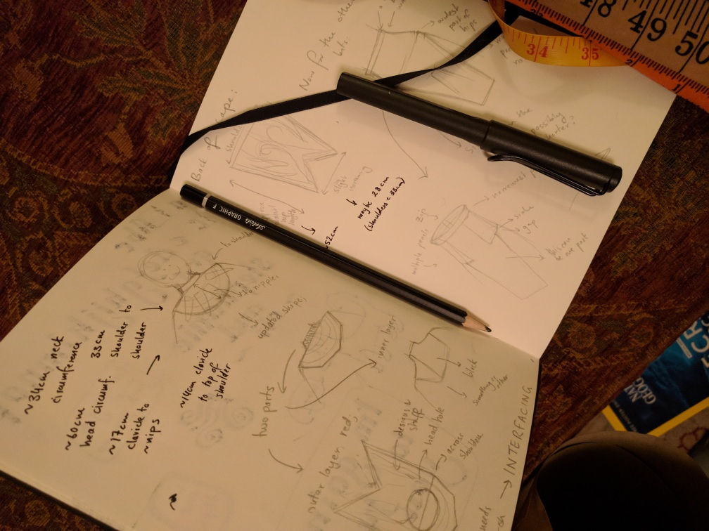
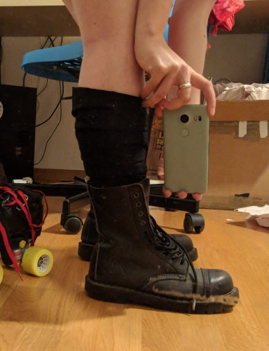

Here are a bunch of WIP pictures of the Bloodseeker (Dota 2) cosplay I did for MCM London Comic Con on the weekend. This is the first non-Halloween costume I've made, and the first non-trivial sewing project I've done, so it's far from perfect, but I'm pretty happy with how it turned out overall.
For reference, here's what Bloodseeker looks like... (yes, this is a photograph of my screen)
And for further reference, here's what my cosplay ended up looking like... (my face doesn't usually look like that)
I took a lot of progress pictures of the crafting, so I've tried to find a smallish number for each of the components. Most of the crafting took place in my boyfriend's parents' house, saving me the need to fly with two glaives in my bag. Also he has a heat gun.
The fabric bits
This costume was my introduction to using a sewing machine (save a day-long class I took with the Thrifty Stitcher in London), so I kept it two two stitches and fumbling around making patterns.

Never have I measured myself so much.
I heard you're supposed to use muslin? Also doubles for making cold-brew coffee. This was me trying to deal with the fact that my waist is sort of, but not exactly, cone shaped. It turns out those little tucks I did are called 'darts', and I didn't invent them.
Originally had this elaborate thing where the flappy bit on the loin cloth would wrap up and around from the back of the waist band. I wanted it to fall right, but I do not understand fabric nearly well enough.
My sewing machine is a Janome Sewist 525S, because that is exactly the one I used at the aforementioned sewing class, so I avoided doing any market research at all.
Sewing interfacing onto the inside of the front of the cape, on the tiniest ironing board. I wanted it to be a bit stiff, so it would retain a mostly-round shape even if there were bones and stuff on it. I think this worked okay.
Comparing different shades of black/red paint/pen on the fabric. Is painting acrylic onto fabric a thing you're supposed to do? I did a lot of that.
This is a collar. I improvised how you're supposed to do collars. I am looking forward to learning how to actually sew things.
Plain red fabric bits! I kept them in this state for ages because I was afraid of destroying them with painting. One day the skates on my floor will kill me.
Drawing patterns onto the cape. I forgot to get like... anything you're supposed to use to draw onto fabric, and it was Sunday (which means everywhere in Zurich is closed), so I just #yolo'd it and directly drew with an 8B pencil. This particular section was also improvisation, because I couldn't find an angle of Bloodseeker where you can actually see the top of his shoulders/back of his neck. There is no evidence Bloodseeker even has a neck. Slit in the back of the head hole to enable me to put it over my massive head. (My head is massive, my roller derby helmet confirms this. Massive.)
Painting acrylic onto fabric. I accidentally bought so much red/black paint! I preferred how it looked when it was sort of vaguely-shaded, rather than solid colours in the end. I will make a costume with more exciting painting in it next time.

These wraps did not work out on the day. I did not think about how to get wraps to lie flat and not just slowly fall down my calves and bunch around my shoes. There's also supposed to be a red trim on this, and I did cut it out/sew it, but I didn't have time to do the final assembly. Things to fix for next time.
Sewing myself into the hand wraps was interesting.
bones
The basic construction of the bones is a papery core with a plaster wrap ... wrapping. Because I obsessively hoard things I suspect may be one day useful, I have an entire box of generic recycled sheets of paper. I managed to use almost a tenth of the box making these bones. Next costume: mostly paper?
Applying plaster wrap is extremely satisfying. I spent an afternoon making these while listening to podcasts. If you ever find you're too easily distracted by your phone/computer, you should try covering your hands with plaster.
Painted a few coats of English breakfast tea on these bad boys. Check out that extremely Swiss shopping bag.
helmet
EVA foam! Drafting a helmet: challenging. Building a rugby ball: all too easy. We didn't have a dremel so you can see the jagged edges where I tried to hack at the edge of the foam to create a surface I could join.
Not pictured: sanding some extremely angular corners. Still too angular. These angles haunt my nightmares. Learned I love sanding (somehow??).
Helmet... wings? Flaps? That horrible join is what the angular corners looked liek before the extensive sanding. I think if I do this costume again I will just make the helmet out of fake leather.
Painting on foam is easier than fabric. I actually ended up going over this paint, because it's better if you go EVA foam -> PVA glue -> spray paint -> normal paint, apparently.
I'm pretty proud of the solution I came up with for attaching + fanning the feathers. That's a strip of softer craft foam, which I then painted black and glued to the inside of the helmet. Also, because the helmet is shaped like a rugby ball, there's space for feather shafts in the back.
glaives
I made these in the ~1.5 days before MCM, but they were a lot easier than trying to make any clothing. Trying to get things to fit is really hard. For the glaives, I just had to measure how long my forearms are.
The basic idea of the glaives is that they're a sandwich of EVA foam (the handles) around a thin-craft-foam-worbla sandwich (the blades). I decided to do it this way because it seemed physically plausible, and would result in something that wasn't too bulky-looking. This photo shows the thin and EVA foams, pre-sanding.
Worbla's Finest Art ready to be sandwiched around the thin craft foam. I did a sort of partial sandwich, where the worbla didn't completely enclose the foam (see the black extending beyond the gold), to give a sharper blade edge.
Half-sandwiching in progress. Working with Worbla is quite nice! Once we realised you can turn the heat gun down from 600C it all got a lot easier.
Love sanding.
Sanded EVA handles + partial worbla sandwich + sharp foam edge. Part of me thinks they looked better like this than post-painting. I think it's to do with the texture - acrylic paint introduces a very... plastic texture.
Post painting! Ignore the horrible worbla seams! I had to make up some designs to put on the handles. My boyfriend did most of the painting of the glaives, because I was mysteriously busy with something else at the time (possibly painting acrylic on fabric). Also, he knows how to paint things to look like metal.
Here I am with my boyfriend in his costume!

The last two things I did with the glaives were: painting shading to try to make them look a bit more three-dimensional, and painting blood on. I bought some fake blood, but it just sort of sat on the surface of the blades, jamlike.
conclusion
I think some people who make costumes also make an effort to get good photographs of themself wearing it. I did not do this. (Luckily, the (only) other Dota 2 cosplayer I met at MCM got some photos of us here). Next time, I will get some better photos.